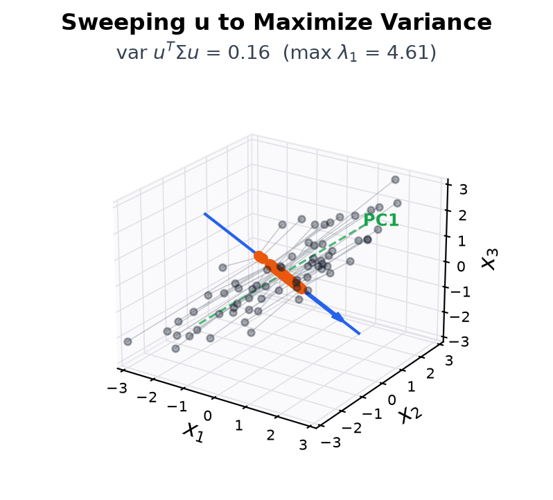
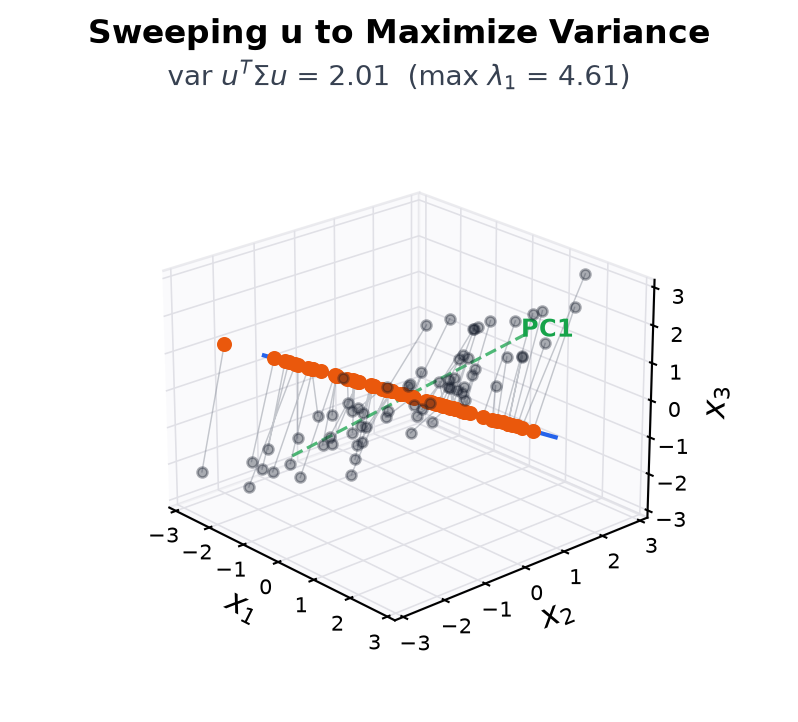
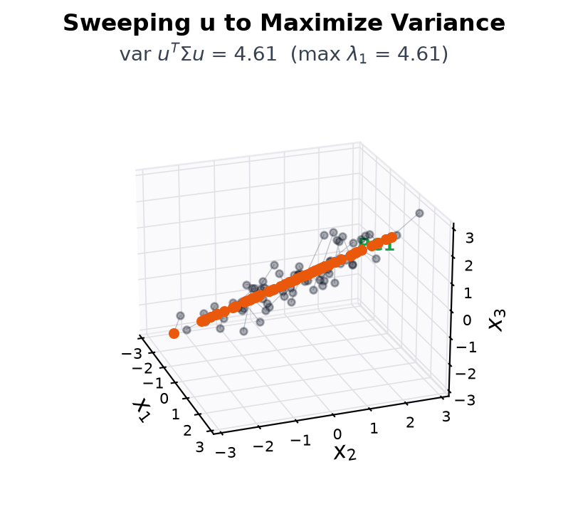
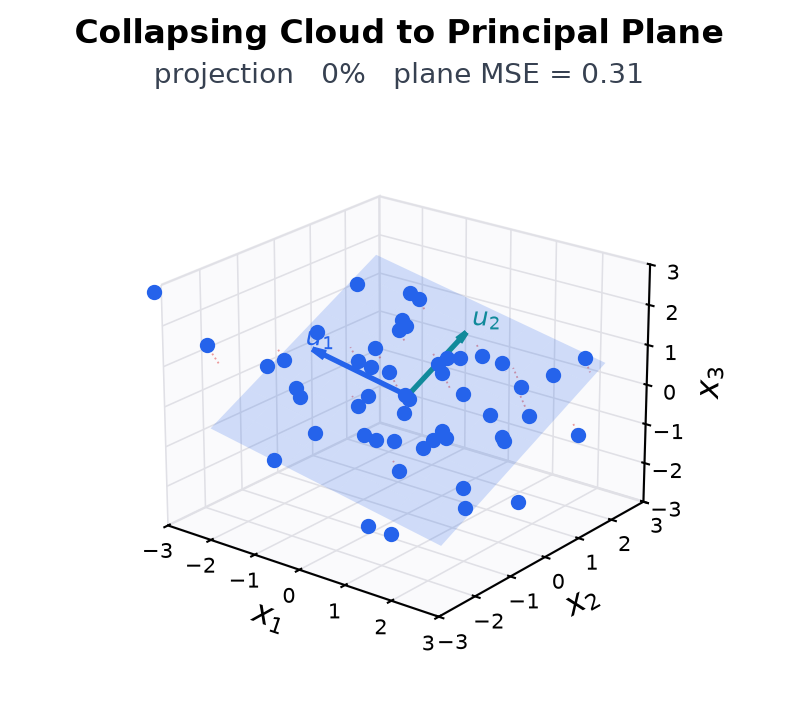
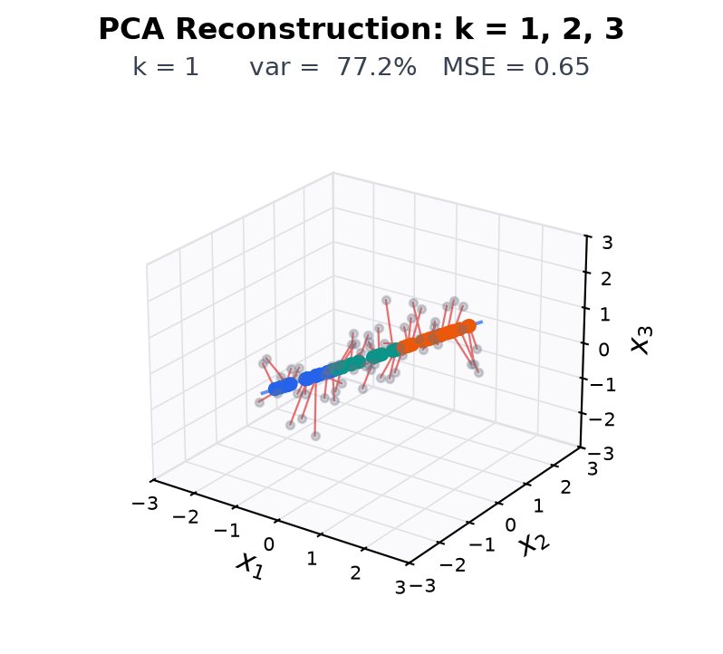
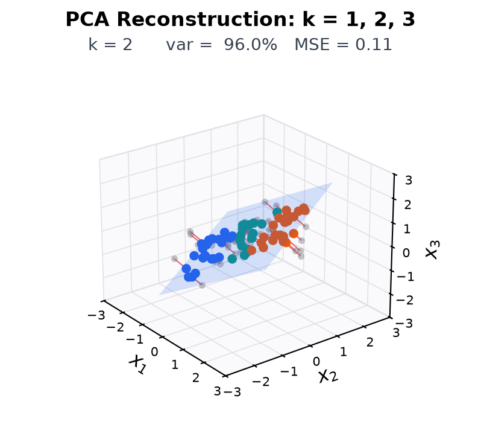
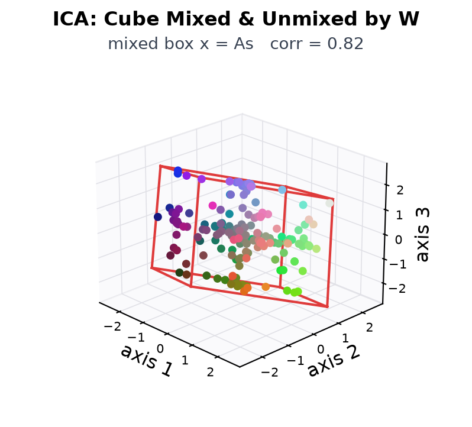
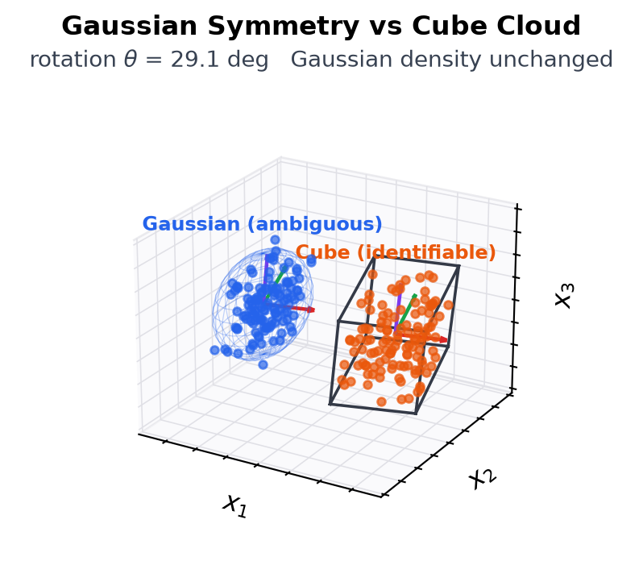
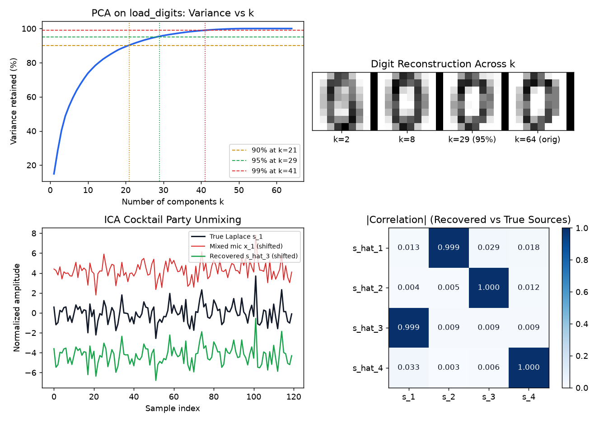

Principal Component Analysis और Independent Component Analysis
Theory
इस lecture में: Unsupervised dimensionality reduction और source separation, PCA preprocessing, projected variance \(u^T \Sigma u\) को maximize करके top eigenvector निकालना, \(k\)-dimensional PCA, reconstruction error नज़रिया, SVD से सीधा संबंध, variance retained से \(k\) चुनना, PCA के applications, फिर ICA: cocktail party problem (\(x = As\), \(W = A^{-1}\)), ICA की ambiguities, Gaussian sources क्यों अलग नहीं किए जा सकते, density transformation \(p_x(x) = p_s(Wx)|W|\), और super-Gaussian sources के लिए sigmoid-CDF algorithm व उसका gradient ascent update।
1. एक line में idea
कई बार आपके पास हर example में सैकड़ों या हज़ारों features होते हैं, पर असल जानकारी एक बहुत छोटे subspace में छिपी होती है। Principal Component Analysis (PCA) वह \(k\)-dimensional subspace ढूँढता है जिस पर data को project करने के बाद सबसे ज़्यादा variance बचा रहे (या समतुल्य रूप से, reconstruction error सबसे कम हो)।
दूसरी तरफ़, Independent Component Analysis (ICA) का मकसद data को छोटा करना नहीं, बल्कि आपस में मिल चुके मूल स्वतंत्र signals (independent sources) को अलग-अलग करना है। जैसे एक कमरे में कई लोग एक साथ बोल रहे हों और कई microphones उनकी मिली-जुली आवाज़ रिकॉर्ड कर रहे हों, तो ICA हर बोलने वाले की अलग आवाज़ वापस निकालता है।
2. Setup और Notation
| Symbol | मतलब |
|---|---|
| \(\{x^{(1)}, \dots, x^{(m)}\}\) | unlabeled training examples, जहाँ हर \(x^{(i)} \in \mathbb{R}^n\) |
| \(\Sigma\) | empirical covariance matrix: \(\Sigma = \frac{1}{m}\sum_{i=1}^{m} x^{(i)} x^{(i)T} \in \mathbb{R}^{n \times n}\) (zero-mean data के लिए) |
| \(u_1, \dots, u_k\) | \(\Sigma\) के top \(k\) orthonormal eigenvectors (principal components), \(\|u_j\|_2 = 1\) |
| \(U_k\) | matrix \([u_1 \;\cdots\; u_k] \in \mathbb{R}^{n \times k}\), जिसके columns principal directions हैं |
| \(y^{(i)} \in \mathbb{R}^k\) | \(x^{(i)}\) का \(k\)-dimensional PCA representation: \(y^{(i)} = U_k^T x^{(i)}\) |
| \(\tilde{x}^{(i)} \in \mathbb{R}^n\) | \(y^{(i)}\) से वापस बनाया गया approximation: \(\tilde{x}^{(i)} = U_k y^{(i)}\) |
| \(s^{(i)} \in \mathbb{R}^n\) | ICA में छिपे हुए मूल independent sources |
| \(A \in \mathbb{R}^{n \times n}\) | अज्ञात mixing matrix, जिससे \(x^{(i)} = A s^{(i)}\) बनता है |
| \(W \in \mathbb{R}^{n \times n}\) | unmixing matrix (\(W = A^{-1}\)), जिसकी rows \(w_1^T, \dots, w_n^T\) हैं और \(s^{(i)} = W x^{(i)}\) |
| \(g(s)\) | एक source का cumulative distribution function (CDF); यहाँ logistic sigmoid \(g(s) = \frac{1}{1+e^{-s}}\) |
3. PCA Preprocessing: पहले data तैयार करें
PCA चलाने से पहले data पर दो preprocessing steps ज़रूरी हैं:
- Mean zero करना (Centering): सारे examples का औसत निकालें और हर example में से घटा दें:
\[\mu = \frac{1}{m} \sum_{i=1}^{m} x^{(i)}, \qquad x^{(i)} \leftarrow x^{(i)} - \mu\]
- Unit variance पर scale करना (जब units अलग हों): अगर अलग-अलग coordinates अलग पैमानों पर नापे गए हैं (जैसे \(x_1\) घर का क्षेत्रफल वर्ग फ़ुट में और \(x_2\) कमरों की संख्या), तो बड़े पैमाने वाला feature अकेले ही सारा variance हावी कर लेगा। इसलिए हर coordinate \(j = 1, \dots, n\) को उसकी standard deviation से भाग दें:
\[\sigma_j^2 = \frac{1}{m} \sum_{i=1}^{m} \left(x_j^{(i)}\right)^2, \qquad x_j^{(i)} \leftarrow \frac{x_j^{(i)}}{\sigma_j}\]
अगर सारे features एक ही इकाई में हों (जैसे image के सारे pixels \(0\) से \(255\) के बीच), तो अक्सर सिर्फ़ mean घटाना काफ़ी होता है और variance से भाग नहीं दिया जाता। आगे हम मानकर चलेंगे कि \(x^{(i)}\) पहले से zero-mean हैं।
4. PCA: Projected Variance को Maximize करना
मान लीजिए हम कोई unit vector \(u \in \mathbb{R}^n\) (\(\|u\|_2 = 1\)) चुनते हैं। किसी बिंदु \(x^{(i)}\) को \(u\) की दिशा पर project करने से scalar coordinate \(u^T x^{(i)}\) मिलता है (और 3D या \(n\)D space में projected vector \((u^T x^{(i)}) u\) होता है)।
चूँकि data का mean शून्य है, projections \(u^T x^{(i)}\) का औसत भी शून्य होगा: \(\frac{1}{m}\sum_{i=1}^m u^T x^{(i)} = u^T \mu = 0\)। इसलिए \(u\) की दिशा में projected data का empirical variance है:
\[\frac{1}{m} \sum_{i=1}^{m} \left(x^{(i)T} u\right)^2 = \frac{1}{m} \sum_{i=1}^{m} u^T x^{(i)} x^{(i)T} u = u^T \left( \frac{1}{m} \sum_{i=1}^{m} x^{(i)} x^{(i)T} \right) u = u^T \Sigma u\]
हमें ऐसी दिशा \(u\) चाहिए जिस पर points सबसे ज़्यादा फैले रहें, ताकि projection के बाद जानकारी कम से कम खोए। यानी हमारी optimization problem है:
\[\max_{u \in \mathbb{R}^n} \; u^T \Sigma u \qquad \text{subject to} \quad u^T u = 1\]
Derivation: Top Eigenvector क्यों मिलता है
Constraint \(u^T u = 1\) के साथ Lagrangian लिखें:
\[\mathcal{L}(u, \lambda) = u^T \Sigma u - \lambda (u^T u - 1)\]
\(u\) के सापेक्ष gradient लेकर शून्य के बराबर रखें (\(\nabla_u (u^T \Sigma u) = 2\Sigma u\) क्योंकि \(\Sigma\) symmetric है):
\[\nabla_u \mathcal{L}(u, \lambda) = 2\Sigma u - 2\lambda u = 0 \quad \Longrightarrow \quad \Sigma u = \lambda u\]
यह सीधी eigenvector equation है! यानी कोई भी stationary दिशा \(u\), covariance matrix \(\Sigma\) का एक unit eigenvector होनी चाहिए। अब अगर \(\Sigma u = \lambda u\) को objective में वापस रखें, तो:
\[u^T \Sigma u = u^T (\lambda u) = \lambda u^T u = \lambda\]
अर्थात किसी भी eigenvector दिशा में projected variance ठीक उसके eigenvalue \(\lambda\) के बराबर होता है। इसलिए variance को सबसे बड़ा बनाने के लिए हमें \(\Sigma\) का सबसे बड़ा eigenvalue \(\lambda_1\) और उसका unit eigenvector \(u_1\) चुनना चाहिए। यही पहला principal component है।
\(k\)-dimensional PCA
\(\Sigma\) एक symmetric positive semi-definite matrix है, इसलिए इसके सारे eigenvalues वास्तविक व अऋणात्मक (\(\lambda_1 \ge \lambda_2 \ge \dots \ge \lambda_n \ge 0\)) होते हैं और उनके eigenvectors परस्पर orthogonal चुने जा सकते हैं।
अगर हमें \(n\)-dimensional data को \(k\)-dimensional subspace (\(k < n\)) में ले जाना है, तो हम \(u_1\) के orthogonal रहते हुए अगली सबसे ज़्यादा variance वाली दिशा \(u_2\) चुनते हैं, और इसी तरह \(\Sigma\) के top \(k\) orthonormal eigenvectors \(u_1, \dots, u_k\) ले लेते हैं। किसी भी \(x^{(i)}\) का नया \(k\)-dimensional representation यह बनता है:
\[y^{(i)} = \begin{bmatrix} u_1^T x^{(i)} \\ u_2^T x^{(i)} \\ \vdots \\ u_k^T x^{(i)} \end{bmatrix} = U_k^T x^{(i)} \in \mathbb{R}^k\]
कुल बचा हुआ variance \(\sum_{j=1}^{k} u_j^T \Sigma u_j = \sum_{j=1}^{k} \lambda_j\) होता है।
5. Reconstruction Error नज़रिए से PCA
PCA को समझने का दूसरा सुंदर तरीका है: हम ऐसा \(k\)-dimensional subspace ढूँढें जिससे हर बिंदु \(x^{(i)}\) की सीधी (perpendicular) दूरी सबसे कम हो।
अगर किसी बिंदु के low-dimensional coordinates \(y^{(i)} = U_k^T x^{(i)}\) हैं, तो मूल \(\mathbb{R}^n\) space में उसका reconstruction (अंदाज़ा) होगा:
\[\tilde{x}^{(i)} = U_k y^{(i)} = \sum_{j=1}^{k} \left(u_j^T x^{(i)}\right) u_j\]
क्योंकि \(u_1, \dots, u_k\) orthonormal हैं (\(U_k^T U_k = I_k\)), residual vector \((x^{(i)} - \tilde{x}^{(i)})\) subspace पर projection \(\tilde{x}^{(i)}\) के ठीक perpendicular होता है। Pythagoras प्रमेय से:
\[\|x^{(i)} - \tilde{x}^{(i)}\|_2^2 = \|x^{(i)}\|_2^2 - \|\tilde{x}^{(i)}\|_2^2\]
और चूँकि \(U_k\) के columns orthonormal हैं, \(\|\tilde{x}^{(i)}\|_2^2 = \|U_k y^{(i)}\|_2^2 = y^{(i)T} U_k^T U_k y^{(i)} = \|y^{(i)}\|_2^2 = \sum_{j=1}^{k} (u_j^T x^{(i)})^2\)। पूरे dataset पर औसत squared reconstruction error लें:
\[\frac{1}{m} \sum_{i=1}^{m} \|x^{(i)} - \tilde{x}^{(i)}\|_2^2 = \underbrace{\frac{1}{m} \sum_{i=1}^{m} \|x^{(i)}\|_2^2}_{\text{स्थिर (} U_k \text{ पर निर्भर नहीं)}} - \sum_{j=1}^{k} u_j^T \Sigma u_j\]
पहला पद \(U_k\) बदलने से नहीं बदलता। इसलिए reconstruction error को minimize करना ठीक वही है जो projected variance \(\sum_{j=1}^{k} u_j^T \Sigma u_j\) को maximize करना! दोनों रास्तों से वही top \(k\) eigenvectors \(u_1, \dots, u_k\) मिलते हैं, और न्यूनतम औसत reconstruction error \(\sum_{j=k+1}^{n} \lambda_j\) के बराबर होता है।
6. SVD, \(k\) का चुनाव, और PCA Algorithm
Singular Value Decomposition (SVD) से संबंध
व्यवहार में जब \(n\) बड़ा हो, तो पहले \(n \times n\) matrix \(\Sigma = \frac{1}{m} X^T X\) बनाना और फिर eigendecomposition करना अनावश्यक और numerically कम सटीक होता है। मान लीजिए centered examples को rows में रखकर हम data matrix \(X \in \mathbb{R}^{m \times n}\) बनाते हैं। तब \(\Sigma = \frac{1}{m} X^T X\)।
\(X\) का SVD लिखें:
\[X = P S V^T\]
जहाँ \(P \in \mathbb{R}^{m \times m}\) और \(V \in \mathbb{R}^{n \times n}\) orthogonal matrices हैं, तथा \(S \in \mathbb{R}^{m \times n}\) में ऊपर बाएँ अऋणात्मक singular values \(s_1 \ge s_2 \ge \dots \ge 0\) हैं। तब:
\[\Sigma = \frac{1}{m} X^T X = \frac{1}{m} V S^T P^T P S V^T = V \left(\frac{1}{m} S^T S\right) V^T\]
इससे साफ़ दिखता है कि \(V\) के columns \(v_1, \dots, v_n\) ही \(\Sigma\) के eigenvectors \(u_1, \dots, u_n\) हैं, और eigenvalues सीधे singular values से निकल आते हैं:
\[\lambda_j = \frac{s_j^2}{m}\]
अगर \(m \ll n\) हो (जैसे कम सैंपल्स लेकिन हज़ारों pixels), तो thin SVD सिर्फ़ \(O(m^2 n)\) समय में principal components दे देता है, बिना विशाल \(n \times n\) matrix बनाए।
Step-by-Step PCA Algorithm
- Preprocessing: \(\mu = \frac{1}{m}\sum_{i=1}^m x^{(i)}\) घटाएँ और ज़रूरत हो तो हर coordinate को \(\sigma_j\) से भाग दें।
- Centered matrix \(X \in \mathbb{R}^{m \times n}\) पर thin SVD चलाएँ: \(X = P S V^T\)।
- \(V\) के पहले \(k\) columns को चुनकर \(U_k = [v_1 \;\cdots\; v_k] \in \mathbb{R}^{n \times k}\) रखें।
- हर example को compress करें: \(y^{(i)} = U_k^T x^{(i)} \in \mathbb{R}^k\) (या पूरे batch के लिए \(Y = X U_k\))।
Variance Retained से \(k\) कैसे चुनें
कुल variance \(\mathrm{Tr}(\Sigma) = \sum_{j=1}^{n} \lambda_j\) है, और \(k\) components रखने पर \(\sum_{j=1}^{k} \lambda_j\) बचता है। Fraction of variance retained यह अनुपात है:
\[\frac{\sum_{j=1}^{k} \lambda_j}{\sum_{j=1}^{n} \lambda_j} = \frac{\sum_{j=1}^{k} s_j^2}{\sum_{j=1}^{n} s_j^2}\]
आम नियम यह है कि सबसे छोटा ऐसा \(k\) चुनें जिसके लिए कम से कम \(95\%\) (या \(99\%\)) variance बचा रहे। Visualization के लिए मजबूरी में \(k = 2\) या \(k = 3\) चुना जाता है क्योंकि हमारी आँखें 2D या 3D ही देख सकती हैं।
PCA के मुख्य Applications
- Visualization: उच्च-आयामी vectors को \(k = 2\) या \(3\) पर उतारकर scatter plot में clusters और patterns देखना।
- Compression और तेज़ Learning: Memory बचाना और downstream supervised algorithms के training समय को घटाना (ध्यान रहे: \(U_k\) सिर्फ़ training set पर सीखें, test set पर नहीं)।
- Noise Reduction और Anomaly Detection: छोटे eigenvalues अक्सर high-frequency random noise होते हैं। \(\tilde{x} = U_k U_k^T x\) से शोर साफ़ होता है, और बड़ा \(\|x - \tilde{x}\|_2\) असामान्य (anomalous) example पकड़ लेता है।
- Computer Vision (Eigenfaces): चेहरों की तस्वीरों के मुख्य प्रकाश और बनावट के patterns को कम eigenvectors में पकड़ना।
7. Independent Component Analysis (ICA) और Cocktail Party Problem
कल्पना कीजिए एक पार्टी में \(n\) वक्ता एक साथ बोल रहे हैं और कमरे में अलग-अलग जगह रखे \(n\) microphones आवाज़ रिकॉर्ड कर रहे हैं। समय बिंदु \(i\) पर मूल वक्ताओं की असली आवाज़ें \(s^{(i)} = (s_1^{(i)}, \dots, s_n^{(i)})^T \in \mathbb{R}^n\) हैं, और microphones को उनका एक रैखिक मिश्रण (linear mixture) सुनाई देता है:
\[x^{(i)} = A s^{(i)}\]
यहाँ \(A \in \mathbb{R}^{n \times n}\) अज्ञात mixing matrix है (जो वक्ताओं और microphones की दूरियों पर निर्भर करता है)। हमें न \(A\) पता है और न \(s^{(i)}\); हमारे पास सिर्फ़ रिकॉर्ड किए गए \(x^{(1)}, \dots, x^{(m)}\) हैं। हमारा लक्ष्य unmixing matrix \(W = A^{-1}\) सीखना है ताकि मूल स्वतंत्र signals वापस मिल सकें:
\[s^{(i)} = W x^{(i)}, \qquad \text{जहाँ } s_j^{(i)} = w_j^T x^{(i)}\]
ध्यान दें कि PCA और ICA बिल्कुल अलग सवाल हल करते हैं: PCA सिर्फ़ uncorrelated (\(\mathbb{E}[y_j y_l] = 0\)) और orthogonal दिशाएँ ढूँढता है, जबकि ICA statistically independent (\(p(s) = \prod_j p_j(s_j)\)) मूल स्रोतों को ढूँढता है, जिनकी दिशाएँ (\(A\) के columns) आपस में orthogonal होना ज़रूरी नहीं हैं।
ICA की दो अपरिहार्य Ambiguities
केवल \(x^{(i)}\) देखकर दो चीज़ें तय करना सिद्धांत रूप से असंभव है:
- Permutation ambiguity (क्रम तय न होना): हम यह नहीं बता सकते कि कौन सा वक्ता पहला source है और कौन सा दूसरा। किसी भी permutation matrix \(P\) के लिए \(x = A s = (A P^{-1})(P s)\), और \(P s\) के अवयव भी उतने ही स्वतंत्र हैं।
- Scaling और sign ambiguity (आकार और चिह्न तय न होना): अगर source \(s_j\) को किसी अशून्य अचर \(c\) से गुणा कर दें और \(A\) के \(j\)-वें column को \(c\) से भाग दे दें, तो \(x\) बिल्कुल नहीं बदलता। ख़ासकर \(+s_j\) और \(-s_j\) के बीच फ़र्क नहीं किया जा सकता। सौभाग्य से audio और ज़्यादातर signals में आवाज़ उलटी या दोगुनी तेज़ होने से कोई फ़र्क नहीं पड़ता।
इलाज के तौर पर हम मान लेते हैं कि हर \(s_j\) का पैमाना पहले से तय prior density से मेल खाता है।
Gaussian Sources क्यों अलग नहीं हो सकते?
ICA की सबसे महत्वपूर्ण शर्त यह है कि मूल sources Gaussian नहीं होने चाहिए (अधिक से अधिक एक source Gaussian हो सकता है)। क्यों?
मान लीजिए \(s \sim \mathcal{N}(0, I)\) है। तब \(x = A s\) का distribution \(\mathcal{N}(0, A A^T)\) होगा। अब कोई भी orthogonal rotation matrix \(R\) लें (\(R R^T = R^T R = I\)) और एक नई mixing matrix \(A' = A R\) बनाएँ। यदि \(x' = A' s\) हो, तो:
\[x' \sim \mathcal{N}\!\left(0,\; A' (A')^T\right) = \mathcal{N}\!\left(0,\; A R R^T A^T\right) = \mathcal{N}\!\left(0,\; A A^T\right)\]
यानी \(A\) और \(A R\) से निकला हुआ data \(x\) बिल्कुल एक जैसा distribution रखता है! Standard Gaussian \(\mathcal{N}(0, I)\) हर दिशा में पूरी तरह गोल (rotationally symmetric) होता है। Data से आप covariance \(A A^T\) तो जान सकते हैं, पर छिपी हुई rotation \(R\) का कोई सुराग नहीं मिलता। इसके विपरीत, अगर \(s\) किसी चौकोर घन (cube) या नुकीले तारे जैसा non-Gaussian बादल हो, तो घुमाने पर उसके कोने और फलक घूम जाते हैं और सही अक्ष पहचाने जा सकते हैं।
8. Density Transformation और Sigmoid-CDF ICA Algorithm
Linear बदली में Density और \(|W|\) कहाँ से आता है
मान लीजिए हर स्वतंत्र source \(s_j\) की अपनी marginal density \(p_s(s_j)\) है। स्वतंत्रता के कारण joint density है:
\[p_s(s) = \prod_{j=1}^{n} p_s(s_j)\]
अब \(s = W x\) (यानी \(x = W^{-1} s\)) से \(x\) की probability density निकालने के लिए केवल \(p_s(Wx)\) लिख देना गलत होगा। एक आयाम में भी अगर \(s = 2x\) और \(s \sim \mathrm{Uniform}[0, 1]\) हो, तो \(x \sim \mathrm{Uniform}[0, 1/2]\) बनता है जिसकी ऊँचाई \(1\) नहीं बल्कि \(2\) होती है, ताकि कुल क्षेत्रफल \(1\) रहे। बहु-आयामी कलन (multivariable change of variables) से Jacobian determinant \(|W| = |\det W|\) से गुणा करना पड़ता है:
\[p_x(x) = p_s(Wx)\, |W| = \left( \prod_{j=1}^{n} p_s(w_j^T x) \right) |W|\]
अगर \(|W|\) पद न होता, तो likelihood बढ़ाते समय algorithm \(W\) को मनचाहा छोटा या बड़ा खींचकर गलत उत्तर दे देता।
Sigmoid-CDF चुनाव और Super-Gaussian शर्त
हमें \(p_s\) के लिए कोई उचित non-Gaussian density चुननी होगी। किसी भी वैध CDF \(g(s)\) (जो \(0\) से \(1\) तक एकदिष्ट रूप से बढ़े) का अवकलज \(p_s(s) = g'(s)\) एक वैध density होता है। इस tutorial में डिफ़ॉल्ट चुनाव logistic sigmoid CDF है:
\[g(s) = \frac{1}{1 + e^{-s}}, \qquad p_s(s) = g'(s) = g(s)\bigl(1 - g(s)\bigr)\]
यह density शून्य के सापेक्ष सममित है, बीच में Gaussian से ज़्यादा नुकीली है, और किनारों पर इसकी tails Gaussian की तुलना में धीमे गिरती हैं (भारी tails, धनात्मक kurtosis)। महत्वपूर्ण बात: यह sigmoid-CDF तरीका super-Gaussian sources के लिए काम करता है। इंसान की आवाज़, संगीत, और Laplace distribution जैसे प्राकृतिक signals ज़्यादातर समय शून्य के पास शांत रहते हैं और बीच-बीच में बड़े झटके (spikes) देते हैं, इसलिए वे super-Gaussian होते हैं और sigmoid-CDF उन पर बेहतरीन काम करता है। (इसके उलट uniform distribution जैसे चपटे sub-Gaussian sources के लिए अलग nonlinearity लेनी पड़ती है।)
Log-Likelihood और Gradient Ascent Update का Derivation
पूरे training set \(\{x^{(1)}, \dots, x^{(m)}\}\) पर \(W\) का log-likelihood लिखें:
\[\ell(W) = \sum_{i=1}^{m} \left( \sum_{j=1}^{n} \log g'\!\left(w_j^T x^{(i)}\right) + \log |W| \right)\]
हमें \(\nabla_W \ell(W)\) चाहिए। इसके दो भाग हैं:
- Matrix calculus के मानक परिणाम से determinant का gradient है: \(\nabla_W \log |W| = (W^T)^{-1}\)।
- चूँकि \(g'(z) = g(z)(1 - g(z))\), इसका अवकलज \(g''(z) = g'(z)(1 - 2g(z))\) होता है। इसलिए:
\[\frac{d}{dz} \log g'(z) = \frac{g''(z)}{g'(z)} = 1 - 2g(z)\]
Chain rule से \(j\)-वीं row \(w_j^T\) के सापेक्ष एक उदाहरण \(x\) का gradient है: \(\nabla_{w_j} \log g'(w_j^T x) = (1 - 2g(w_j^T x))\, x\)। सभी \(j = 1, \dots, n\) rows को एक साथ matrix के रूप में सजाने पर \((1 - 2g(Wx)) x^T\) मिलता है, जहाँ \(g(Wx)\) हर अवयव पर अलग-अलग लगता है।
अतः एक training example \(x\) पर Stochastic Gradient Ascent का update rule बनता है:
\[W := W + \alpha \left( \bigl(1 - 2g(Wx)\bigr) x^T + (W^T)^{-1} \right)\]
यहाँ \(\alpha > 0\) learning rate है। Converge होने के बाद हम हर मिश्रित सैंपल से \(\hat{s}^{(i)} = W x^{(i)}\) निकालकर मूल sources प्राप्त कर लेते हैं।
Step-by-Step ICA Algorithm
- Preprocessing: data को zero-mean करें (\(x^{(i)} \leftarrow x^{(i)} - \mu\))। तेज़ convergence के लिए वैकल्पिक रूप से data को whiten भी किया जा सकता है।
- \(W \in \mathbb{R}^{n \times n}\) को initialize करें (जैसे random छोटा पूर्ण-रैंक matrix या \(I_n\))।
- कई epochs तक examples को random क्रम में घुमाएँ और हर \(x^{(i)}\) के लिए update करें: \(W := W + \alpha \left( (1 - 2g(W x^{(i)})) x^{(i)T} + (W^T)^{-1} \right)\)।
- अलग किए गए sources निकालें: \(\hat{s}^{(i)} = W x^{(i)}\)।
9. Practical बातें और आम गलतियाँ
- Overfitting रोकने के लिए अंधाधुंध PCA न लगाएँ: कई लोग regularization के बदले features घटाने के लिए पहले PCA लगा देते हैं। यह ख़तरनाक है क्योंकि PCA बिना label \(y\) देखे छोटी variance वाली दिशाएँ फेंक देता है, और हो सकता है \(y\) की असली जानकारी उन्हीं दिशाओं में हो। Overfitting के लिए \(L_2\)/\(L_1\) regularization कहीं बेहतर है।
- Train-test leakage से बचें: Mean \(\mu\), scaling \(\sigma_j\), और PCA matrix \(U_k\) केवल training data पर निकालें, और वही \(\mu, \sigma_j, U_k\) test data पर लगाएँ।
- ICA में source distribution का ध्यान रखें: यहाँ इस्तेमाल किया गया \(1 - 2g(Wx)\) नियम super-Gaussian (जैसे speech, Laplace) signals के लिए है। यदि आपके sources sub-Gaussian हों (जैसे \(\mathrm{Uniform}[-1, 1]\)), तो यही नियम गलत कोनों की ओर मुड़ जाएगा।
- ICA में समय-क्रम (temporal correlation): हमारा derivation मानता है कि अलग-अलग \(i\) स्वतंत्र हैं। असली भाषण में पास के समय बिंदु जुड़े होते हैं, फिर भी examples को randomly shuffle करके SGD चलाने पर यही update व्यवहार में बहुत बढ़िया काम करता है।
10. खुद से पूछें
- यदि आप PCA से पहले data का mean शून्य करना भूल जाएँ और data मूलबिंदु से बहुत दूर \((1000, 1000, 1000)\) के पास बसा हो, तो पहला eigenvector \(u_1\) किस दिशा की ओर इशारा करेगा?
- मान लीजिए \(\Sigma \in \mathbb{R}^{5 \times 5}\) के eigenvalues \(12, 5, 2, 0.6, 0.4\) हैं। कम से कम \(95\%\) variance बचाने के लिए सबसे छोटा \(k\) क्या होगा, और उस \(k\) पर औसत squared reconstruction error कितना बचेगा?
- ICA log-likelihood में \(\log |W|\) वाला पद किस काम आता है? अगर आप गलती से update में \((W^T)^{-1}\) जोड़ना छोड़ दें और सिर्फ़ \((1 - 2g(Wx)) x^T\) से update करें, तो \(W\) के साथ क्या गड़बड़ी हो सकती है?
3D Animations



क्या देखें: यहाँ 3D में zero-mean data का बादल फैला है और नीला तीर unit vector \(u\) है। शुरू में \(u\) कम फैलाव वाली दिशा में है, इसलिए उस रेखा पर नारंगी projections पास-पास सिमटे हैं और \(u^T \Sigma u\) छोटा है। जैसे-जैसे \(u\) घूमकर पहले principal component (हरी dashed रेखा) की ओर जाता है, नारंगी बिंदु सबसे ज़्यादा फैल जाते हैं। अंत में \(u\) ठीक top eigenvector \(u_1\) पर रुकता है जहाँ projected variance \(\lambda_1\) अधिकतम है।



क्या देखें: यहाँ 3D points को top दो eigenvectors \(u_1, u_2\) से बने नीले principal plane (\(k=2\)) पर उतारा जा रहा है। हल्के सलेटी बिंदु मूल \(x^{(i)}\) हैं और नीले बिंदु धीरे-धीरे plane पर उनके orthogonal projection \(\tilde{x}^{(i)} = U_2 U_2^T x^{(i)}\) पर गिरते हैं। लाल रेखाएँ perpendicular residuals \(x^{(i)} - \tilde{x}^{(i)}\) दिखाती हैं। PCA ठीक ऐसा plane चुनता है जिससे इन लाल रेखाओं की squared लंबाइयों का औसत सबसे कम हो।



क्या देखें: एक मुड़े हुए 3D बिंदु-समूह को अलग-अलग \(k\) से reconstruct किया गया है। शुरू में \(k=1\) पर सारे अनुमानित बिंदु सिर्फ़ एक सीधी रेखा (\(u_1\)) पर हैं और लाल error रेखाएँ लंबी हैं। बीच में \(k=2\) लेते ही बिंदु principal plane पर फैल जाते हैं और ज़्यादातर variance वापस मिल जाता है। अंत में \(k=3\) पर तीसरा component भी जुड़ जाता है, reconstruction error शून्य हो जाता है, और मूल 3D बादल पूरा लौट आता है।



क्या देखें: शुरू में तीन स्वतंत्र super-Gaussian sources एक सीधे घन (cube) के भीतर हैं। फिर अज्ञात mixing matrix \(A\) उन्हें तिरछे और दबे हुए बक्से (\(x = As\)) में मिला देता है जहाँ सभी coordinates आपस में जुड़ जाते हैं। इसके बाद sigmoid-CDF gradient ascent नियम \(W\) को step-by-step सीखता है। देखिए कैसे सीखा हुआ \(W\) तिरछे बक्से को सीधा करके वापस स्वतंत्र अक्षों वाला घन (\(\hat{s} = Wx\)) बना देता है।



क्या देखें: बाईं ओर गोलाकार Gaussian बादल \(\mathcal{N}(0, I)\) है और दाईं ओर स्वतंत्र non-Gaussian घन (cube) बादल। जब दोनों को किसी orthogonal rotation \(R(\theta)\) से घुमाया जाता है, तो बाएँ Gaussian गोले का आकार बिल्कुल वैसा ही दिखता है क्योंकि \(R R^T = I\)। इसलिए Gaussian sources में \(A\) और \(AR\) के बीच फ़र्क करना असंभव है। दाएँ घन के कोने और फलक घूमते ही तिरछे हो जाते हैं, जिससे ICA सही अक्ष पहचान लेता है।
Python Example
इसे खुद चलाएँ: dhruv_ai_tutorial/.venv/bin/python dhruv_ai_tutorial/chapters/L15_pca_ica/example.py
"""Lecture 15 example: SVD से PCA और Sigmoid-CDF से ICA (सिर्फ़ NumPy). 1. Handwritten digits (load_digits, 64 dimensions) पर SVD से PCA: variance retained बनाम k और reconstruction error की जाँच। 2. Laplace-distributed (super-Gaussian) स्वतंत्र sources को mixing matrix A से मिलाकर sigmoid-CDF stochastic gradient ascent से वापस अलग करना। """ import numpy as np import matplotlib.pyplot as plt from sklearn.datasets import load_digits rng = np.random.default_rng(42) # ==================== भाग 1: load_digits पर SVD से PCA ==================== digits = load_digits() X_raw = digits.data.astype(float) # (1797, 64), हर उदाहरण 8x8 तस्वीर m_dig, n_dig = X_raw.shape # Preprocessing: mean शून्य करें (सभी pixels एक ही 0..16 पैमाने पर हैं) mu = X_raw.mean(axis=0) X_c = X_raw - mu # Thin SVD: X_c = P S V^T, जहाँ V के columns ही Sigma = (1/m) X_c^T X_c के eigenvectors हैं P, svals, Vt = np.linalg.svd(X_c, full_matrices=False) eigvals = (svals ** 2) / m_dig # lambda_j = s_j^2 / m total_var = eigvals.sum() cum_var = np.cumsum(eigvals) / total_var # जाँचें कि Sigma के सीधे eigenvalues और s_j^2 / m बराबर हैं Sigma = (X_c.T @ X_c) / m_dig eig_direct = np.linalg.eigvalsh(Sigma)[::-1] print(f"PCA on load_digits: m = {m_dig}, n = {n_dig}, total variance = {total_var:.2f}") print(f"SVD बनाम eig(Sigma) अधिकतम अंतर: {np.max(np.abs(eigvals - eig_direct)):.2e}\n") print(" k variance retained (%) reconstruction MSE (retained + MSE)") for k in (1, 2, 5, 10, 20, 29, 41, 50): Uk = Vt[:k].T # (64, k) top-k principal directions Y = X_c @ Uk # (m, k) compressed coordinates X_rec = Y @ Uk.T # (m, 64) reconstruction mse = np.mean(np.sum((X_c - X_rec) ** 2, axis=1)) kept = eigvals[:k].sum() print(f"{k:3d} {100 * cum_var[k - 1]:6.2f}% {mse:8.2f} {kept + mse:8.2f}") for target in (0.90, 0.95, 0.99): k_min = int(np.searchsorted(cum_var, target) + 1) print(f"{int(100 * target)}% variance के लिए सबसे छोटा k = {k_min} (64 से घटकर {k_min} features)") # ==================== भाग 2: Laplace Sources पर Sigmoid-CDF ICA ==================== m_ica, n_ica = 4000, 4 # Super-Gaussian मूल sources: Laplace(0, 1), जिनकी tails Gaussian से भारी हैं S_true = rng.laplace(loc=0.0, scale=1.0, size=(m_ica, n_ica)) S_true -= S_true.mean(axis=0) # अज्ञात mixing matrix A से माइक्रोफ़ोन मिश्रण x^(i) = A s^(i) A = np.array([[1.0, 0.6, -0.4, 0.3], [-0.5, 1.1, 0.5, -0.2], [0.3, -0.4, 1.0, 0.6], [0.4, 0.2, -0.5, 0.9]]) X_mix = S_true @ A.T X_mix -= X_mix.mean(axis=0) def sigmoid(z): return 1.0 / (1.0 + np.exp(-np.clip(z, -30.0, 30.0))) # Stochastic Gradient Ascent: W := W + alpha * ((1 - 2g(Wx)) x^T + (W^T)^-1) W = rng.normal(0.0, 0.4, size=(n_ica, n_ica)) + np.eye(n_ica) alpha = 0.004 for epoch in range(25): for i in rng.permutation(m_ica): x = X_mix[i] g = sigmoid(W @ x) W += alpha * (np.outer(1.0 - 2.0 * g, x) + np.linalg.inv(W.T)) alpha *= 0.96 S_hat = X_mix @ W.T # अनुमानित स्वतंत्र sources # Absolute correlation matrix: rows = recovered s_hat_i, cols = true s_j corr_abs = np.abs(np.corrcoef(S_hat.T, S_true.T)[:n_ica, n_ica:]) print("\nICA (Laplace super-Gaussian sources): |corr(s_hat_i, s_j)| matrix:") header = " " + " ".join(f"true s_{j + 1}" for j in range(n_ica)) + " row max" print(header) for i in range(n_ica): row_str = " ".join(f"{corr_abs[i, j]:8.4f}" for j in range(n_ica)) print(f"s_hat_{i + 1} {row_str} {corr_abs[i].max():7.4f}") # ==================== भाग 3: परिणामों का चित्र ==================== fig, axes = plt.subplots(2, 2, figsize=(10.2, 7.2)) # (a) PCA cumulative variance retained बनाम k ks = np.arange(1, n_dig + 1) axes[0, 0].plot(ks, 100 * cum_var, color="#2563eb", lw=2) for pct, col in ((90, "#ca8a04"), (95, "#16a34a"), (99, "#dc2626")): k_star = int(np.searchsorted(cum_var, pct / 100.0) + 1) axes[0, 0].axhline(pct, color=col, ls="--", lw=1, label=f"{pct}% at k={k_star}") axes[0, 0].axvline(k_star, color=col, ls=":", lw=1) axes[0, 0].set(xlabel="Number of components k", ylabel="Variance retained (%)", title="PCA on load_digits: Variance vs k") axes[0, 0].legend(fontsize=8.5) # (b) एक digit का अलग-अलग k से reconstruction sample_idx = 0 panels = [] for k in (2, 8, 29, 64): rec = mu + (X_c[sample_idx] @ Vt[:k].T) @ Vt[:k] panels.append(rec.reshape(8, 8)) strip = np.hstack([np.pad(p, ((0, 0), (0, 1)), constant_values=16.0) for p in panels]) axes[0, 1].imshow(strip, cmap="gray_r", vmin=0, vmax=16) axes[0, 1].set_xticks([3.5, 12.5, 21.5, 30.5]) axes[0, 1].set_xticklabels(["k=2", "k=8", "k=29 (95%)", "k=64 (orig)"]) axes[0, 1].set_yticks([]) axes[0, 1].set_title("Digit Reconstruction Across k") # (c) पहले true Laplace source, mixed signal, और matched unmixed signal की तुलना match_row = int(np.argmax(corr_abs[:, 0])) sign_fix = np.sign(np.corrcoef(S_hat[:, match_row], S_true[:, 0])[0, 1]) sl = slice(0, 120) axes[1, 0].plot(S_true[sl, 0] / S_true[:, 0].std(), label="True Laplace s_1", lw=1.6, color="#111827") axes[1, 0].plot(X_mix[sl, 0] / X_mix[:, 0].std() + 4.2, label="Mixed mic x_1 (shifted)", lw=1.1, color="#dc2626") axes[1, 0].plot(sign_fix * S_hat[sl, match_row] / S_hat[:, match_row].std() - 4.2, label=f"Recovered s_hat_{match_row + 1} (shifted)", lw=1.4, color="#16a34a") axes[1, 0].set(xlabel="Sample index", ylabel="Normalized amplitude", title="ICA Cocktail Party Unmixing") axes[1, 0].legend(fontsize=8, loc="upper right") # (d) Absolute correlation matrix heatmap im = axes[1, 1].imshow(corr_abs, cmap="Blues", vmin=0.0, vmax=1.0) for r in range(n_ica): for c in range(n_ica): col_txt = "white" if corr_abs[r, c] > 0.55 else "#111827" axes[1, 1].text(c, r, f"{corr_abs[r, c]:.3f}", ha="center", va="center", color=col_txt, fontsize=9.5) axes[1, 1].set_xticks(range(n_ica), [f"s_{j + 1}" for j in range(n_ica)]) axes[1, 1].set_yticks(range(n_ica), [f"s_hat_{i + 1}" for i in range(n_ica)]) axes[1, 1].set_title("|Correlation| (Recovered vs True Sources)") fig.colorbar(im, ax=axes[1, 1], fraction=0.046) fig.tight_layout() fig.savefig("result.png", dpi=130)
PCA on load_digits: m = 1797, n = 64, total variance = 1201.48
SVD बनाम eig(Sigma) अधिकतम अंतर: 5.12e-13
k variance retained (%) reconstruction MSE (retained + MSE)
1 14.89% 1022.57 1201.48
2 28.51% 858.94 1201.48
5 54.50% 546.72 1201.48
10 73.82% 314.51 1201.48
20 89.43% 126.99 1201.48
29 95.48% 54.31 1201.48
41 99.01% 11.89 1201.48
50 99.95% 0.54 1201.48
90% variance के लिए सबसे छोटा k = 21 (64 से घटकर 21 features)
95% variance के लिए सबसे छोटा k = 29 (64 से घटकर 29 features)
99% variance के लिए सबसे छोटा k = 41 (64 से घटकर 41 features)
ICA (Laplace super-Gaussian sources): |corr(s_hat_i, s_j)| matrix:
true s_1 true s_2 true s_3 true s_4 row max
s_hat_1 0.0126 0.9990 0.0292 0.0182 0.9990
s_hat_2 0.0043 0.0049 0.9998 0.0124 0.9998
s_hat_3 0.9985 0.0092 0.0086 0.0095 0.9985
s_hat_4 0.0329 0.0033 0.0060 0.9998 0.9998
